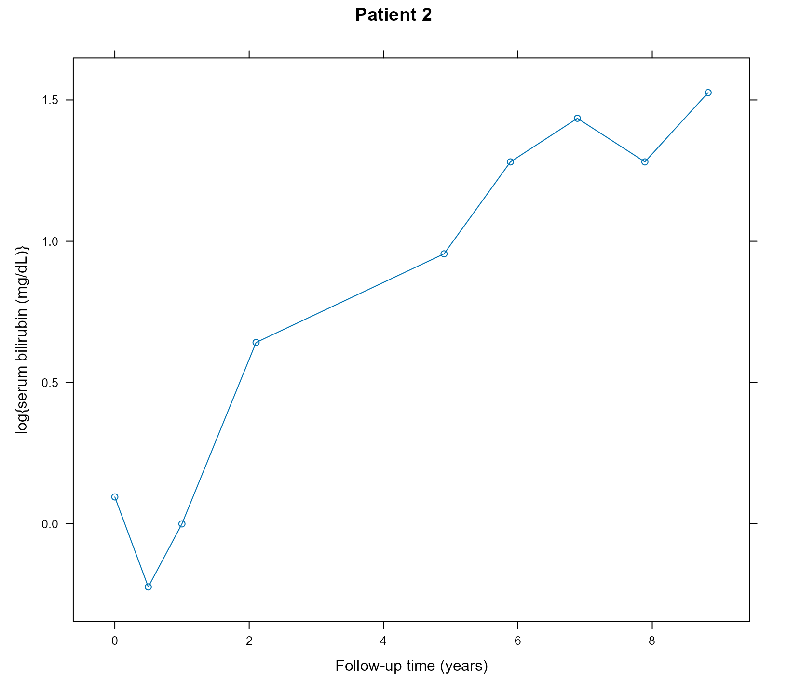

vignettes/Causal_Effects.Rmd
Causal_Effects.RmdWe will illustrate the calculation of causal effects from joint
models using the PBC dataset for the longitudinal outcome
serBilir and the composite event transplantation or death.
We start by fitting a joint model to the data. In the longitudinal
submodel, we specify nonlinear subject-specific trajectories using
natural cubic splines. In the fixed-effects part, we also include the
treatment effect and its interaction with time. In the survival
submodel, we only include the treatment effect.
pbc2.id$status2 <- as.numeric(pbc2.id$status != "alive")
lmeFit <- lme(log(serBilir) ~ ns(year, 3, B = c(0, 14.4)) * drug,
data = pbc2, random = ~ ns(year, 3, B = c(0, 14.4)) | id,
control = lmeControl(opt = "optim"))
CoxFit <- coxph(Surv(years, status2) ~ drug, data = pbc2.id)
jmFit <- jm(CoxFit, lmeFit, time_var = "year")
summary(jmFit)
#>
#> Call:
#> jm(Surv_object = CoxFit, Mixed_objects = lmeFit, time_var = "year")
#>
#> Data Descriptives:
#> Number of Groups: 312 Number of events: 169 (54.2%)
#> Number of Observations:
#> log(serBilir): 1945
#>
#> DIC WAIC LPML
#> marginal 4217.836 4527.502 -2937.053
#> conditional 6503.006 6206.639 -3454.250
#>
#> Random-effects covariance matrix:
#>
#> StdDev Corr
#> (Intr) 0.9958 (Intr) n(,3,B=c(0,14.4))1 n(,3,B=c(0,14.4))2
#> n(,3,B=c(0,14.4))1 1.5005 0.2219
#> n(,3,B=c(0,14.4))2 1.6970 0.4318 0.7505
#> n(,3,B=c(0,14.4))3 1.8995 0.4247 0.2076 0.6798
#>
#> Survival Outcome:
#> Mean StDev 2.5% 97.5% P Rhat
#> drugD-penicil -0.0138 0.2061 -0.4079 0.3859 0.9533 1.0037
#> value(log(serBilir)) 1.3001 0.0881 1.1354 1.4741 0.0000 1.0109
#>
#> Longitudinal Outcome: log(serBilir) (family = gaussian, link = identity)
#> Mean StDev 2.5% 97.5% P Rhat
#> (Intercept) 0.5863 0.0808 0.4309 0.7430 0.0000 1.0007
#> ns(,3,B=c(0,14.4))1 1.1251 0.1719 0.7905 1.4659 0.0000 1.0058
#> ns(,3,B=c(0,14.4))2 2.1954 0.2329 1.7749 2.6913 0.0000 1.0201
#> ns(,3,B=c(0,14.4))3 2.4177 0.3416 1.8350 3.1714 0.0000 1.0342
#> drugD-penicil -0.1061 0.1163 -0.3386 0.1217 0.3633 1.0017
#> n(,3,B=c(0,14.4))1: 0.1869 0.2369 -0.2802 0.6490 0.4218 1.0055
#> n(,3,B=c(0,14.4))2: -0.4776 0.3224 -1.1454 0.1111 0.1211 1.0175
#> n(,3,B=c(0,14.4))3: -0.6994 0.4770 -1.7031 0.1481 0.1233 1.0384
#> sigma 0.2894 0.0065 0.2776 0.3027 0.0000 1.0061
#>
#> MCMC summary:
#> chains: 3
#> iterations per chain: 3500
#> burn-in per chain: 500
#> thinning: 1
#> time: 21 secThe coefficient for drugD-penicil for the survival
outcome in the output produced by the summary() method
denotes the residual/direct effect of treatment on the risk of the
composite event. It does not include the effect of treatment that
follows via the serum bilirubin pathway.
We will illustrate the calculation of causal risk differences for the group of patients that have the same distribution of serum bilirubin values as Patient 2:
xyplot(log(serBilir) ~ year, data = pbc2, subset = id == 2, type = "b",
xlab = "Follow-up time (years)", ylab = "log{serum bilirubin (mg/dL)}",
main = "Patient 2")
We calculate the risk difference for the composite event between the
active treatment D-penicillamine and placebo at the horizon time
t_horiz = 6 using the longitudinal data up to year
t0 = 4. To achieve this, we create a dataset with this
patient’s data. This patient received the active treatment
D-penicillamine; hence, we also create a version of her data with the
drug variable set to placebo:
t0 <- 4
t_horiz <- 6
dataP2_Dpenici <- pbc2[pbc2$id == 2 & pbc2$year <= t0, ]
dataP2_Dpenici$years <- t0
dataP2_Dpenici$status2 <- 0
dataP2_placebo <- dataP2_Dpenici
dataP2_placebo$drug <- factor("placebo", levels = levels(pbc2$drug))Note that in the dataP2_placebo dataset, we need to
specify that drug is a factor with two levels. We also
specify that the last time point we know the patient was still
event-free was t0.
We estimate the cumulative risk for the composite event at
t_horiz under the active treatment arm using the
predict() method:
Pr1 <- predict(jmFit, newdata = dataP2_Dpenici, process = "event",
times = t_horiz, return_mcmc = TRUE)We have set the argument return_mcmc to
TRUE to enable the calculation of a credible interval that
accounts for the MCMC uncertainty. We produce the same estimate under
the placebo arm:
Pr0 <- predict(jmFit, newdata = dataP2_placebo, process = "event",
times = t_horiz, return_mcmc = TRUE)The estimated risk difference and its 95% credible interval are
calculated by the corresponding elements of the Pr1 and
Pr0 objects, i.e.,
# estimate
Pr1$pred[2L] - Pr0$pred[2L]
#> [1] 0.002916423
# MCMC variability
quantile(Pr1$mcmc[2L, ] - Pr0$mcmc[2L, ], probs = c(0.025, 0.975))
#> 2.5% 97.5%
#> -0.1790905 0.1952539An extended example with time-varying treatments / intermediate events that showcases a calculation of the variance of the causal effects that includes the sampling variability is available here.